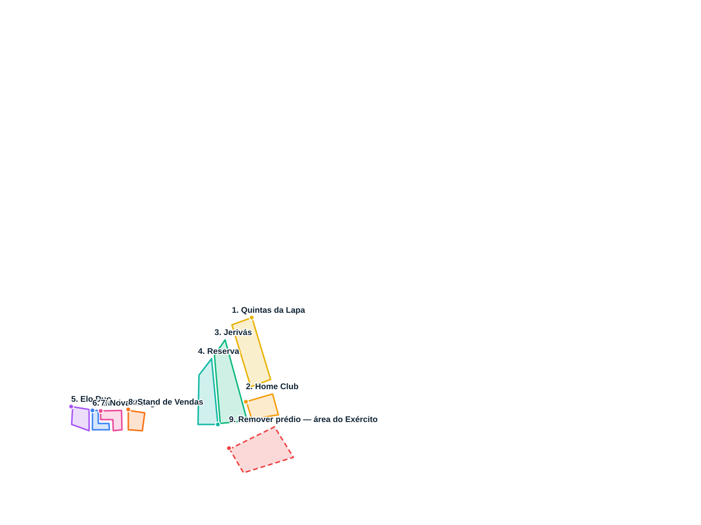

Esta visualização é somente para validar os locais marcados no mapa original; nenhuma construção ou rua foi editada. Os polígonos são as coordenadas fornecidas pelo usuário.
Atenção: o contorno do Stand de Vendas (8) cruza a si mesmo. Revisar antes de utilizá-lo como máscara de edição definitiva.
